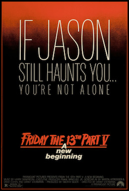

| Friday the 13th A New Beginning | |
|---|---|
|  | |
| Film | Friday the 13th A New Beginning |
| source cerita: | wikipedia |
| Tanggal rilis | 19 Maret 1985 |
| Bahasa | Bahasa Inggris |
| Durasi | 92 menit |
Film dibuka dengan Tommy Jarvis muda yang mengunjungi makam Jason Voorhees, namun bersembunyi karena dua penggali kuburan muncul. Setelah keduanya menggali, Jason bangkit dan membunuh mereka sebelum akhirnya mendatangi tempat Tommy bersembunyi.
Adegan itu diketahui hanyalah mimpi dari Tommy Jarvis yang kini berumur 18 tahun saat tengah menuju Rumah Transisi Pinehurst, sebuah institusi kejiwaan untuk mempersiapkan orang-orang dari rumah sakit jiwa ke dunia sosial. Pinehurst yang berada di pinggir kota kecil itu dimiliki Dr. Matt Letter dan kamar Tommy ditunjukkan oleh Pam Roberts. Tommy juga bertemu Reggie, cucu dari koki George, juga sepasang kekasih Tina dan Eddie,Robin, Violet, dan Jake. Di dekat Pinehurst ada seorang ibu Ethel Hubbard dan anaknya Junior. Mereka mengancam akan menutup rumah transisi itu bila remaja-remajanya masih mengganggu ladang milik mereka.
Di halaman belakang, Joey salah satu penghuni Pinehurst membuat Vic marah dan membunuhnya dengan kapak. Dua paramedis bernama Duke dan Roy Burns membawa mayatnya. Duke bercanda tentang Joey namun Roy justru tampak sedih. Malam harinya, dua pemuda yang tengah memperbaiki mobil mereka Vinnie di bunuh oleh seseorang dengan memasukkan kembang api ke dalam mulutnya dan temannya Pete dibunuh dengan celah ditenggorokan di kursi mobil. Malam berikutnya, Billy, sang supir yang mengantarkan Tommy ke Pinehurst dibunuh saat menunggu pacarnya Lana yang sedang menutup kedai makannya. Lana yang melihat mayat Billy kemudian dibunuh dengan kapak di ayunkan ke perut
Esok harinya, Tina dan Eddie berhubungan badan di dalam hutan. Raymond, pekerja di ladang Ethel yang mengintip mereka dibunuh. Seusainya, ketika Eddie membersihkan diri ke sungai, lubang mata Tina ditusuk dengan gunting rumput. Eddie menemukannya dan turut dibunuh dengan kepalanya diikat dengan sabuk yang dipuntir hingga kepalanya remuk. Malamnya, Pam dan Tommy menemani Reggie bertemu kakaknya Demon dan kekasih sang kakak Anita di taman trailer. Tommy memutuskan menunggu di luar, lalu bertemu dengan Junior dan terlibat perkelahian. Perkelahian itu membuat Junior kabur, begitupun Tommy, memaksa Pam dan Reggie untuk pergi. Sepeninggal mereka, leher Anita digorok dan Demon ditusuk oleh besi ketika berada dalam toilet. Reggie diturunkan Pam di Pinehurst, kemudian mendapat laporan bahwa seisi rumah banyak yang menghilang. Pampun berkendara untuk mencari mereka. Di rumah Ethel, Junior yang mengamuk karena dipukul Tommy dipenggal sementara Ethel dipukul dari jendela dan kepalanya jatuh kedalam panci rebusan.
Pinehurst, Reggie tertidur di sofa.Robin di bunuh di kamarnya dengan cara ditusuk dari bawah tempat tidur, dan Jake dibunuh di depan kamar Violet dengan cara dipukul memakai kujang,Violet sendiri juga dibunuh saat sedang berdansa dengan cara ditusuk di perut. Saat Reggie beranjak ke lantai atas menuju kamar Tommy, ia melihat mayat tiga orang itu. Dalam kepanikan, Pam yang baru pulang naik ke atas dan melihat mayat itu pula. Keduanyapun lari keluar, berusaha menghindari sang pembunuh yang mirip Jason Voorhees. Ketika berlari, Pam terpisah dengan Reggie, tetapi mengetahui Duke, Matt, telah mati tersangkut di pohon dan ketika Pam ke rumah Reggie tiba tiba ada mayat George yang dilempar dari kaca luar. Saat Pam sampai di dekat Pinehurst dan Jason akan menyerang, Reggie mengendarai buldozer dari lumbung dan menabrakkannya ke arah Jason. Reggie dan Pam lari ke dalam lumbung seusai Jason bangkit kembali. Pam berhasil melukai Jason dengan gergaji mesin namun Jason masih menyerang mereka, membuat keduanya naik ke lumbung bagian atas. Tommy datang dan bertemu Jason. Jason melukai dadanya dengan golok, tetapi Tommy berhasil menusuk paha Jason. Tommypun naik ke atas, bergabung bersama Reggie dan Pam. Jason lalu naik ke atas, mau membunuh Tommy yang setengah sadar, tapi berhasil dihalangi Pam. Pam berdiri di belakang jendela lumbung yang di bawahnya terdapat papan berpaku. Reggie lompat dari tempat sembunyinya dan mendorong Jason. Jason yang dikira sudah jatuh ternyata berpegangan di dinding luar, mencengkeram kaki Pam. Tommy bangkit dari kesadarannya dan menjatuhkan Jason ke papan berpaku. Saat jatuh, terbukalah penyamaran Roy yang berpakaian sebagai Jason.
Di rumah sakit, Pam duduk di koridor bersama Reggie yang tertidur. Pam diberitahu Sheriff Tucker bahwa alasan Roy membunuh mereka karena sisi gilanya keluar saat mengetahui Joey - yang ternyata anaknya - dibunuh. Pam lalu mengecek keadaan Tommy yang masih tidur di dalam kamarnya, yang tiba-tiba Tommy bangun dan menusuk Pam di bagian perut dengan pisau. Itu ternyata hanya mimpi Tommy, yang lalu melihat halusinasi Jason Voorhees di depannya. Pam masuk ke kamar Tommy, bersamaan dengan itu Tommy yang mengenakan topeng hoki dan membawa pisau, menutup pintu kamar.